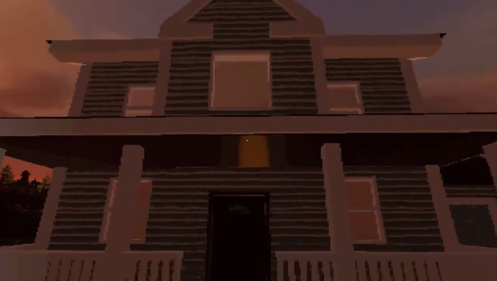

Games inspire a lot of what I make (duh). I love taking apart what makes a mechanic compelling, then exploring what it could become in my own work. Here are the systems, spaces and prototypes behind the finished screens.
TOBI ADEFIDIYA
Game Design & Concepts
SYSTEMS · SPACES PROTOTYPES · PROCESS
01 / Featured project
Cthulhu’s Cat Sitter

HORROR PUZZLE · PC · TEAM PROJECTA familiar house. Unfamiliar rules.
Designing the experience
Teach a routine Then unsettle it
A cat-sitting job becomes a horror puzzle built around observation, survival and impossible spaces. The design starts with a recognisable household task, then changes what the player expects from the house.
My contributionProject leadership, game design documentation, concept pitching and sound design. I also proposed focusing the project on PC instead of the original VR scope.
Game design documentationPlayer journeyScope management
The GDD specifies proximity cues for interactable objects, sound for locked doors and environmental hints during the first trial’s chase. Each cue gives the player information they can act on.
Team & scope
Set a direction the team can build
I led the project and proposed the move from VR to PC. Each trial shares requirements for a spatial effect, a threat and a return to the house, with room for the team’s creative input.
A playable action RPG prologue built around swordplay, defensive actions and elemental abilities. My focus here is how those tools become a readable kit, and how the gauge gives players a reason to keep using their abilities.
Combat designSystems designPlayer feedbackUnity · Game Creator 2
Development footage of Fire, Thunder and Ice at levels I to IV. These are the elemental ability tiers, separate from the three combat gauge levels.
The combat gauge
Use the kit Build your momentum
Using any ability fills the gauge. As the combat level rises, abilities become stronger, giving players an active way to build power during a fight.
Ability use → fill the gauge → higher combat level → stronger abilities.
The prologue uses a linear progression across three combat levels. My intention is to keep players on their toes and make ability use central to overcoming enemies.
Three combat levels I · Blue / II · Yellow / III · Red
Systems design · Customisation
Enhance the kit
Marks reinforce the player’s capabilities. My earlier direction explored tying spells to equipment slots; for the prologue, I kept core abilities available and used Marks to enhance what the player could already do.
Projectile experiment: another pass A second capture of the spell’s behaviour.
What I would improve next
Give players more combat practice before the boss, introduce encounters earlier, and make perfect parries and gauge upgrades easier to discover. These are the onboarding improvements identified in my prologue reflection.
Build the space around the kit+
From building Gate Town to teaching movement, these captures show level development and the feedback around exploration.
Borrowing advice changes traversal without committing a route. Falls retain the current advice for another attempt; reflecting after a crossing records the approach and returns the player to the courtyard.
Talking and trying advice keep the route open. The player can back out of the offer or confirm the speaking voice’s route, which ends the opening slice.
Flows document the capsule opening’s Unity source. Use the prototype download to explore the build; the earlier route screenshots above show a separate stage of development.
The new capsule prototype White: player · Blue: Doubt · Orange: Desire
New version · In development
Try a way forward Then choose your route
I’m currently building a new version of High Road. The opening prototype is available to play below.
The opening separates trying advice from committing to a path. Players can explore how Doubt and Desire change the same crossing before deciding whose route to follow.
Doubt
Spaced stepping stones create a more deliberate crossing.
Can the player solve a puzzle through their past self?
Record a movement sequence, then let its echo perform it. Each recording can be replayed once, so completing the required order depends on planning before the playback. The poem-led puzzle takes inspiration from Stonespoke: the poem tells you which sequence of panels to hit.
Design hypothesisClear feedback and a single-use constraint will encourage players to plan ahead instead of reacting in the moment.
Open the development logOriginal question, rules, controls & asset credits+
Original development log
Tobi Adefidiya
Echo is my prototype that explores whether a puzzle game can be built around absence rather than presence. Instead of directly interacting with the world to progress, the player records their own movements and relies on an echo of those past actions to solve puzzles. This prototype is built around the theme “what remains”, asking the player to think ahead and consider the consequences of actions.
Build Notes:
Question:
Can a puzzle be solved by removing the player from the action and forcing them to rely on their past self?
Hypothesis:
If a player is given clear feedback and constraints, they will adapt to solving problems indirectly by planning their actions in advance rather than reacting in the moment.
Inputs:
Keyboard movement (WASD)
Record action (R)
Replay echo (E)
Additional instructions/useful info:
Players must record their movement before attempting to progress. Echoes can only be used once per recording, and puzzles require completing actions in a specific order during a single playback.
Third-party / found assets & libraries:
Unity
Free sound effects
Placeholder models and materials, Unity Asset Store
How overwhelming can a simple task feel while still being possible?
A straightforward objective becomes harder under time pressure and active opposition. The design keeps the action simple while asking the player to keep moving and stay aware of the arena.
Design hypothesisLayering time pressure and direct opposition over a simple objective will make an achievable task feel chaotic and daunting.
Open the development logOriginal question, rules, controls & asset credits+
Original development log
Tobi Adefidiya
Crossfire Chaos is my prototype that explores how a simple objective can be made overwhelming through pressure and opposition. The player is tasked with a straightforward goal, but the addition of time constraints and active threats creates a sense of chaos and urgency. The intention was to make the task feel almost impossible at first glance, while still being achievable through persistence and determination.
Build Notes
Question:
Can a task be made to feel chaotic and daunting while still remaining possible?
Hypothesis:
If a simple objective is layered with time pressure and direct opposition, players will perceive the challenge as overwhelming even though the underlying task remains achievable.
Inputs:
Keyboard movement (WASD)
Swing Hammer (LMB/Left Mouse Button)
Additional instructions/useful info:
Players are encouraged to keep moving and stay aware of their surroundings. The experience is designed to feel intense and stressful, even though the core objective itself is simple.
Third-party/found assets & libraries:
Unity Starter Assets
Free sound effects from itch.io asset packs
Placeholder models and materials, Unity Asset Store
Placeholder music, YouTube
Bronze, silver or gold When the timer ends, the number of blocks hit determines a bronze, silver or gold rank.
Prototype credits include Unity Starter Assets, itch.io sound effects, Unity Asset Store placeholders and placeholder music from YouTube.
More from development
Earlier combat work and an underwater prototype.
Combat & encounter development
Mark of Mastery
An older version of Mark of Mastery, with arena layouts, enemy setup and combat development from 2023 to 2024. This version is playable in the Drive folder alongside my other concepts.
A development snapshot of an underwater prototype: environment assembly, an oxygen display and on-screen interaction prompts.
Environment developmentPlayer feedback
Environment assembly The scene during Unity development.Oxygen display An early on-screen resource indicator.Interaction prompt The underwater prototype in play.Aiming & controls A gameplay capture with the control legend.
Communicating a direction, exploring alternatives and choosing what to make.
Original concept presentation
Seeds of Conflict
The formal pitch for the idea that would eventually become Strife & Serenity. It captures how I communicated the design at an earlier stage, before it developed into the prologue.